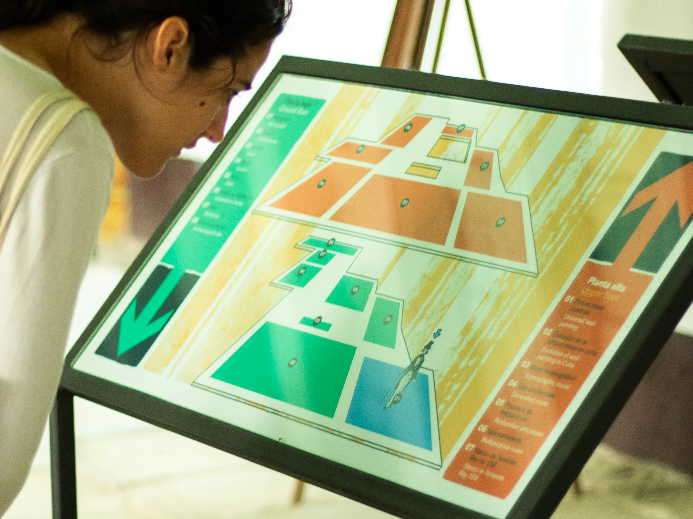
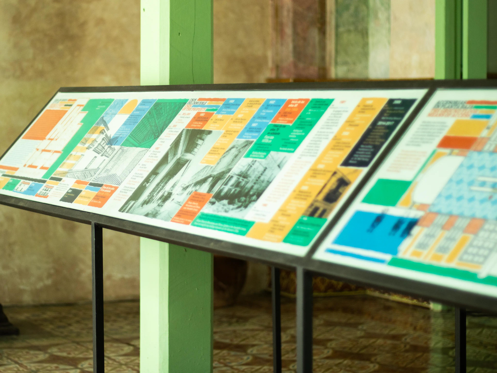
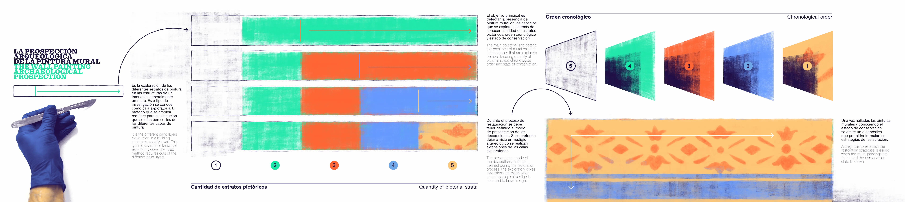
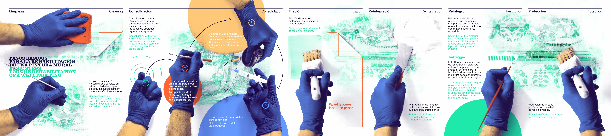
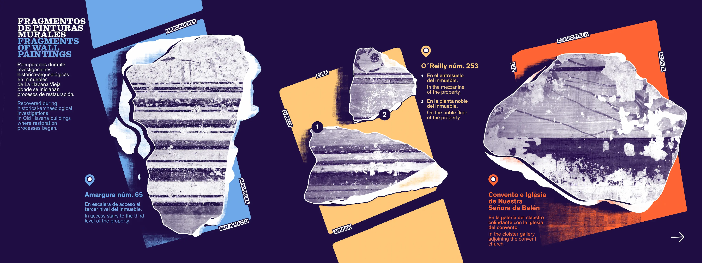
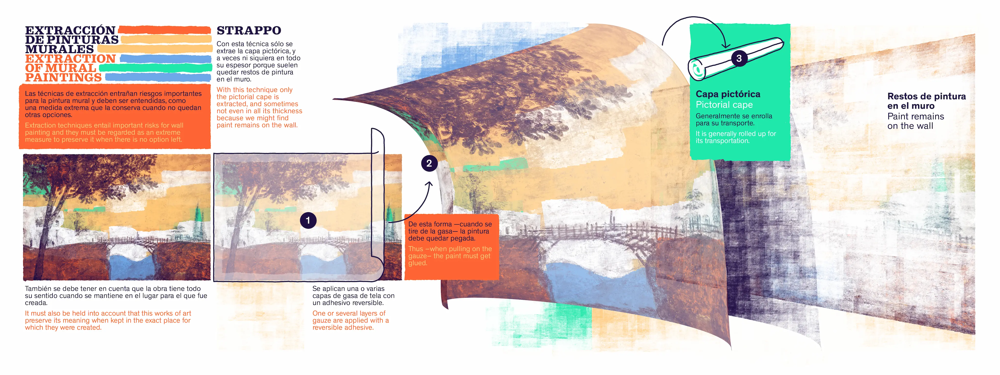
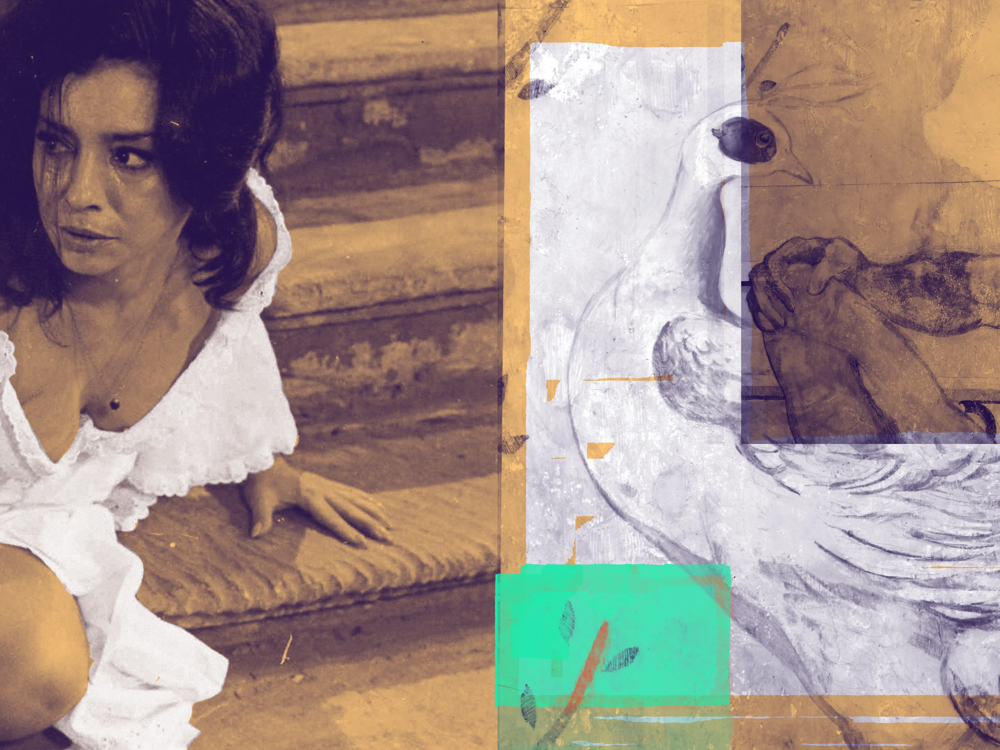
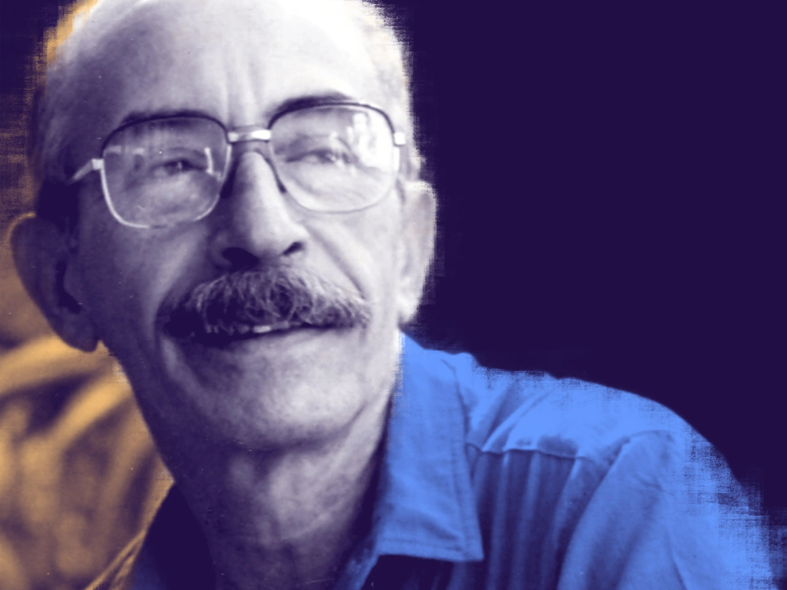

Mural Painting Museum
- Research
- Photography
- Information design
- Illustration
Showcasing archaeological processes and restoration techniques for the Cultural Heritage Directorate of Havana City Historian's Office.
Collaborative project led by Proporciones Studio.







